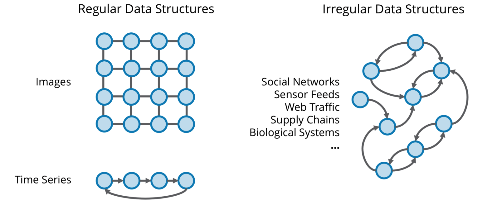

Get started by following an informative guide for configuring a training scenario
Recommended for users with no prior knowledge regarding point cloud training.
OR
Why?
Conventional deep learning architectures, like convolutional neural networks (CNNs) have shown tremendous performance on fields like computer vision and other Euclidean data domains.
However, in many important applications, the data is indexed by irregular, non-Euclidean structures, best described using graphs, in which case, the performance of such networks
decreases drastically.
The concepts of relationships, shared connections and properties occurs naturally in humans and nature. Therefore, understanding and learning from such connections is something taken for granted.
Graph Neural Networks would allow us to take advantage of these concepts in data. Such applications include social networks, sensor feeds, web traffic, supply chains, genetics, neuroscience,
3D modelling and many more.

Problems in Euclidean data domains, like images and time series (left), have seen
great advances through deep learning. Non-Euclidean data domains (right) require new
deep learning techniques to achieve similar advances.
Source: Graph Signal Processing and Deep Learning: Convolution, Pooling, and Topology